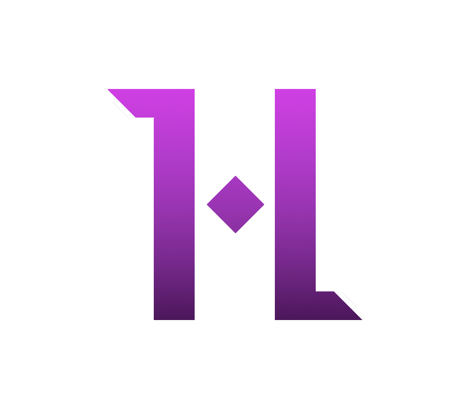

Hypnosis
Hypnosis is a custom graphics engine that serves as an exercise on how to abstract each different API and see their differences and similarities.
Once OpenGL, Vulkan and DirectX 12 are abstracted and implemented, some graphics techniques will be made and put to test to see the performance on each graphics API.
At the moment, the project is in a very early stage of development as I am doing it during my spare time.